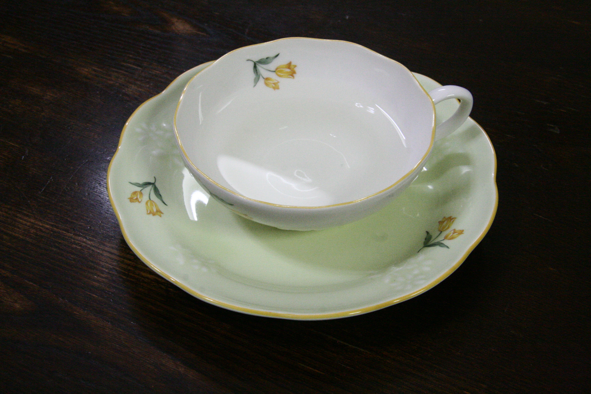

|  | |||
商品としての利用 レモンバームティー 今回は、レモンバームでお茶を入れた。 作り方 このサイトを参考にして、作りました。 1.手でレモンバームの葉をひとつかみ分摘みとり、水洗いする。 2.よく水気を取り、手でちぎりる。 3.ティーポットにレモンバームの葉を入れ、熱湯を注ぎ入れる。 4.蓋をして蒸らし、ティーカップに注ぐ。 感想 レモンバームティーをして利用することができた。 レモンの香りは強かったが、味はあまりしなかった。 また育ったら、今度は葉の量を少し増やして作ってみたい |
栽培結果 目標達成度 たくさんの量を育てるという目標は達成できたと思う。しかし、小さいものも多くなってしまった。 商品価値 数は増やすことができ、形も同じようにすることができた。しかし、大きさは変わってしまい、さらに、エアコンをずっとかけていたため価格はニーズに合わないと思う。 栽培環境 栽培環境は、目標通り光をしっかり当て、エアコンを使い温度調節もしっかりできた。 工夫・その他 数を増やす目標があったので間引きをせずに育ててしまった。そのため、大小の差が大きくなってしまった。しかし、温度は意識できた。 |
||
感想 目標を立てそれに向けてちゃんと育てることができて良かった。また、商品として利用もでき、生物育成について学ぶことができた。 残っている分はまだ育て続け、また利用したいと思った。 |
|||